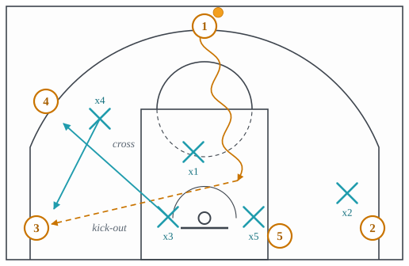
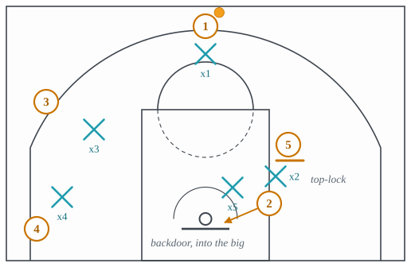

4.4: Help and Rotations
Chapter 4: Defense
Lecture 4.3 ended with a promise: every coverage has a moment when the roller is between the two defenders in the screen and neither can reach him, and a third defender decides what happens. This lecture is about the third defender, and the fourth and fifth. Help defense is the part of the game that a broadcast rarely shows, because the camera follows the ball and the help is happening fifteen feet away from it, and it is the part that decides most possessions. A defense with a good coverage and no help gives up a layup on every roll. A defense with an ordinary coverage and five players who rotate on time gives up contested jumpers all night.
The vocabulary comes in three layers. Section 1 is the floor: the weak side, the nail and the restricted area, which lecture 3.10 named from the offense’s side and this lecture names from the defense’s. Section 2 is the shape, the help side and the low man, and the two rotations built on it, the tag and the X-out. Section 3 is help that does not leave: the stunt and the dig. Section 4 is the recovery, the closeout. Section 5 is two special techniques, the top-lock and verticality, and Section 6 is the one gamble, the hit.
1 The floor, from the defense’s side
Split the court lengthwise through both baskets. The half the ball is on is the strong side, and the half away from it is the weak side, which on defense is also called the help side, because that is where help comes from. The reason is geometric. A defender on the strong side is guarding a man who is one pass from the ball; if he leaves, the pass is short and the shot is quick. A defender on the weak side is guarding a man who is two passes away, or one long one, and the time that pass takes is time he can spend in the lane.
Two spots matter more than the rest. The nail is the middle of the free-throw line, so named because there is a nail in the floor there in many gyms marking the center of the circle. It is the spot from which one defender can threaten a drive from either side of the floor: a step to the right stops a drive from the left wing, a step to the left stops one from the right, and he is never more than a step from his own man at the top. The restricted area is the half-circle in front of the rim inside which a secondary defender cannot draw a charge, whatever his position; it is the rule that decides whether the low man’s help at the rim is a foul on the driver or a foul on him, and it is why help defenders learn to plant their feet outside the line.
2 The help side and the low man
With the ball on a wing, the defense’s shape is the one in Figure 1, and it is the same shape in every man-to-man scheme with minor variations. The on-ball defender is in front of the ball. The strong-side corner defender is a step off his man toward the ball, ready to help on the drive and still able to recover. The defender guarding the top is in the gap, a step toward the lane. And the two weak-side defenders have left their men. One is at the nail. The other, the one guarding the man nearest the baseline, is in the lane with one foot in the paint, and he is the low man.
![Five attackers spaced around the arc with the ball on the right wing. The on-ball defender is in front of the ball. The right-corner defender is a step off his man toward the ball. The defender on the top player is in the gap, a step toward the lane. The two weak-side defenders have left their men: one stands at the nail, the middle of the free-throw line, and the low man stands in the lane near the rim with one foot in the paint. The strong side is guarded man to man; the help side is guarded from the middle.](../figures/help-side.svg)
This is what help side means: not a place but a posture. The weak-side defenders are sagged toward the lane far enough to stop a drive or a roll, and no further than they can recover to a shooter from. The distance is the whole art. Too close to the lane and the kick-out is an open three; too close to the man and the drive is a layup. Every coach’s shell drill is the practice of that one distance.
The low man has the most important job in the defense and the hardest one, because he is guarding two things at once: his own man in the weak corner, and the rim. When a drive or a roll comes to the rim, he is the one who meets it. When the ball is kicked out to the corner he left, he is the one who has to get back. The corner the low man leaves is called the weak corner, and it is the shot the modern offense is built to find, because it is the shortest three on the floor and its defender is the one player the defense has assigned two jobs.
- Assignment
- The weak-side defender nearest the baseline stands in the lane with one foot in the paint. He takes the roller or the driver at the rim, and he recovers to the weak corner when the ball goes there.
- Concedes
- The weak corner three, for the length of his help and his sprint back. This is the trade the whole shape makes.
- Requires
- A defender who reads the roll early, helps without fouling, and sprints back without being told. Usually the best athlete on the floor who is not guarding the ball.
- Beaten by
- The kick-out to the corner he left; the skip pass over him to the far wing; and the hammer, which screens him on his way back to the corner.
The tag
The tag is the low man’s answer to the roll (Figure 2). In every coverage from lecture 4.3 there is a beat when the roller is behind the guard and in front of the dropped or recovering big, and nobody is on him. The low man steps into the lane, meets the roller with his body, holds him up for that beat, and then leaves. He does not switch onto the roller, and he does not stay. He tags and gets out, back to his shooter, and if the big has done his job the roller now has a defender again.
![A pick-and-roll from the right slot. The screener stands on the left side of the handler's defender, with the screen bar between them, touching neither, and the handler dribbles left over the top of the screen. The screener rolls down the lane, between the handler's defender and his own defender, who has dropped back just inside the free-throw line. The low man, the defender of the shooter in the left corner, steps into the lane along an arrow labeled tag, which ends a few feet short of the end of the roll arrow. A second arrow, labeled then back, takes him back out toward the corner, so he does not stay with the roller. The other two attackers stand on the left wing and in the right corner, each with a defender.](../figures/tag.svg)
The tag is a race against the pass. The handler sees the low man leave the corner and throws the ball there, and if the tag lasted a beat too long, the shooter is open. The offense’s whole counting is built around it: the short roll catches the ball while the tag is still happening, and the Spain pick-and-roll puts a screener on the low man so he cannot tag at all.
- Assignment
- The low man steps into the lane to meet the roller for one beat, then returns to his shooter. The big recovers to the roller behind the tag.
- Concedes
- The weak corner for the length of the tag.
- Requires
- Timing: early enough that the roller is met before the catch, short enough that the corner is not open when the pass arrives. A low man who tags late is worse than one who does not tag.
- Beaten by
- The short roll, which gives the roller the ball during the tag; the kick-out to the corner if the tag holds too long; the Spain back screen on the tagger.
The X-out
When the low man has committed to the rim and the ball is kicked to his corner, sending him back to his own man is the slow answer, because he is under the rim and his man is in the corner and the shooter is already loading. The X-out is the fast answer (Figure 3). The next weak-side defender, who was at the nail or on the wing, drops down to the corner shooter, because he is closer and can arrive on a straight line. The low man, instead of returning to the corner, sprints up to the wing shooter that defender left. Their paths cross, which is where the name comes from. Each defender closes out to the nearer man, not to the original one.

The X-out is the most common rotation in the game and the one that most often goes wrong, because both defenders have to make the same decision at the same instant with no time to talk. If both go to the corner, the wing is open. If both go to the wing, the corner is open. Teams drill it until the read is automatic: the man whose help took him under the rim goes up, and the man who was still standing goes down.
- Assignment
- On a kick-out to the weak corner after the low man has helped, the next weak-side defender takes the corner and the low man takes the wing. Nobody returns to his original man.
- Concedes
- A mismatch on the two weak-side shooters, and the second pass if the rotation is slow.
- Requires
- Two defenders who make the same read at once, and who have drilled it enough that neither hesitates.
- Beaten by
- The extra pass: the corner shooter swings the ball to the wing before the low man arrives, and the defense is now one rotation behind on the whole side. The skip pass does the same thing from the other side of the floor.
The pack line, the shape taken to its limit
One scheme makes the help posture a rule with a line on the floor. The pack line keeps the on-ball defender pressuring the ball and the other four inside an imaginary line a step or two inside the three-point arc, whatever their men are doing. Nobody denies a pass on the perimeter; nobody plays up on a shooter who does not have the ball. The four off-ball defenders are always in the gaps, always a step from the lane, and a drive from anywhere meets two of them. What it gives up is written into the shape: the perimeter shot, taken over a defender who closes out from inside the line rather than from the shooter’s hip. It is the help-side posture of Figure 1 made compulsory, and it is chosen by teams that would rather concede a contested three than any drive at all.
- Assignment
- Pressure the ball; the other four stay inside the line, in the gaps, and never deny a perimeter pass. Close out from the line when the ball arrives.
- Concedes
- The catch on the perimeter and the shot over the closeout. The drive is not conceded anywhere.
- Requires
- Four defenders disciplined enough to stay off their men when their men are open, and closeouts good enough that the conceded catch is not an open shot.
- Beaten by
- Shooting: the kick-out and the skip pass to shooters who make the contested three; and the drive-and-kick offense that moves the ball faster than four defenders can close out from the line.
3 Help that stays home: stunt and dig
Not every help leaves the man. Two techniques give the driver or the post player something to think about without opening a shooter, and they are the reason a good defense looks like it is helping everywhere while never actually leaving anyone (Figure 4).
The stunt is a fake at the ball from the nail. As the driver comes toward the middle, the nail defender takes one hard step at him, shows his hands, and goes back to his own man. He has not helped. He has made the driver see a body where there was not one, and a driver who slows for that step has given the beaten defender the time to recover. The stunt is what a defense does when it does not trust its help but wants the offense to think it has some.
The dig is the same idea against a post-up. When the ball goes into the post, the perimeter defender who was guarding the passer drops toward the post player and reaches in at the ball, one hand down, while keeping his body between the post and his own man. He does not double the post, which would leave a shooter open. He makes the post player feel a second defender and protect the ball, which costs the post player the half-second in which a move was going to happen. When the post player looks out to pass, the digging defender is already back.
![The ball-handler dribbles from the right wing toward the middle of the floor, past his defender, who is left behind on the wing. The defender of the attacker at the top of the key stands at the nail, in the middle of the free-throw line, and takes a short step toward the driver along an arrow labeled stunt, then back. The post player stands on the right side of the lane with his defender on the inside, between him and the basket. The left-wing attacker's defender stands off his man in help, just outside the left side of the lane, and the corner attacker's defender stands a few feet above him, toward the wing.](../figures/stunt-and-dig-1.svg)
![The attacker on the right wing has the ball, and a dashed pass arrow runs from him into the post player on the right edge of the lane, whose defender is on the inside, between him and the basket. The passer's defender stands a step below the passer, still on him, and reaches toward the post along a short arrow labeled dig. The corner attacker's defender stands a few feet above him, toward the wing. The top attacker's defender stays at the nail, and the left-wing attacker's defender stays in help just outside the left side of the lane, far off his man.](../figures/stunt-and-dig-2.svg)
Both are cheap, which is the point. A defense that stunts and digs well makes every drive and every post-up slower than it should be, and never gives the kick-out shooter the open three that a real help would.
4 The closeout
Every help in this lecture ends the same way: the ball is passed to the man the helper left, and he has to get back to him. That sprint is the closeout, and it is a skill, not just a run (Figure 6). The defender covers most of the distance at full speed, then, for the last few feet, chops his steps, gets his weight back, and arrives with a hand up. He wants to contest the shot without flying past it, because a shooter who sees a defender arriving out of control does not shoot. He drives, and the defense has traded an open three for an open layup.

The closeout is where the offense’s stampede from lecture 3.7 lives: the shooter catches, watches the defender come, and attacks the moment his feet stop being under him. A defender who closes out badly is not merely late to a shot; he is the reason the next drive happens.
- Assignment
- Sprint most of the way, short steps for the last few feet, high hand, weight back. Take away the shot first and stay in front second.
- Concedes
- A step on the drive, if the shooter attacks the closeout; the defense is betting the help behind it is set.
- Requires
- Discipline under fatigue. The closeout comes at the end of a rotation, when the defender has already sprinted once.
- Beaten by
- The stampede, the drive into a closeout that arrives out of control; and the shooter with a quick enough release that the sprint does not matter.
5 Two techniques with a rule behind them
The top-lock is a way of guarding a shooter who is about to come off a pin-down (Figure 7). Instead of trailing the shooter around the screen, his defender stands above him, between him and the screen, and refuses him the path. The shooter’s only cut is backdoor, toward the rim, and the rim is where the defense’s big is. It concedes the back-cut layup if the big is late, and it takes away the shot the pin-down exists to produce. Teams top-lock the shooter they most fear and nobody else.

Verticality is a rule about contact. A rim protector who jumps straight up with his arms raised, inside his own vertical space, has not fouled the shooter who jumps into him, even inside the restricted area. The rule lets a big contest at the rim without moving his arms toward the ball, and it is why the modern rim protector’s contest looks like a man standing very tall rather than a man swatting. A big who brings his arms down, or leans in, has left his cylinder and the foul is his.
6 The hit
Everything above is help within a structure. The hit is help outside it. Late in a shot clock, a second defender sprints at the ball unprompted, without a screen to justify it and without a coverage call, to trap the handler and force a rushed decision with the clock running out. It is a gamble: the defender who leaves has left an attacker open, and the defense is betting that the clock, not the open man, is what the handler will see. When it works the possession ends in a bad shot or a turnover. When it fails, the pass finds the man the hitter left, and the shot is an open one with two seconds left. The hit is used at the ends of quarters and in the last seconds of a close game, and it is the defensive cousin of the two-for-one from lecture 3.13: a play that only makes sense when the clock is part of the arithmetic.
7 Names heard for which there is no entry yet
The glossaries this site draws on name three more help rotations, each described by one publisher only, so under this site’s rule none has an entry until a second independent source names it. The descriptions are given here so the word is not a mystery when it is heard; the rule and the dated diff are in the plan (plan/PLAN.md, section 8.4) and data/sources/glossary_diff_2026-09-21.md.
- Cover down. A weak-side rotation in which a defender sinks down to the opposing big near the basket to cover for a teammate who has gone to help: the help behind the help.
- Trap the box. The low man rotating from the weak side across to the strong side to help on a drive that is going baseline rather than to the middle, so the driver finds a second defender waiting at the block. This was one of the four leads carried over from the seed report, and it stays a lead: one glossary names it.
- Lock-and-trail. A defender locking onto a shooter and making him use the off-ball screen, then trailing him around it, rather than denying the screen as the top-lock does. It is the alternative technique to the top-lock for the same shooter.
- Split line. The imaginary line that runs the length of the floor from one basket to the other, straight down the middle. It is the same line Section 1 of this lecture splits the court along, so the half on the ball’s side of it is the strong side and the half beyond it is the help side. The glossary that carries the name offers it as a reference line for coaching the defensive end.
The idea to carry into lecture 4.5 is that every rotation in this lecture ends with somebody guarding somebody else’s man. The X-out leaves two defenders swapped; the tag, done late, leaves the low man on the roller. When a defense decides to make that swapping its rule rather than its accident, it is switching, and the next lecture is about the schemes built on it.